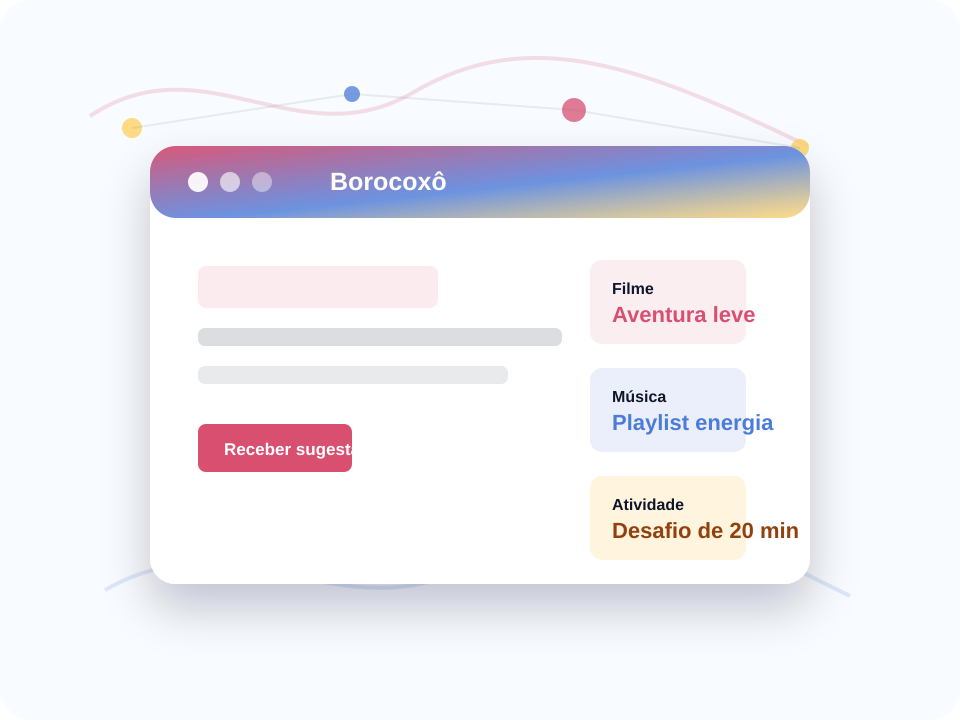

Filtro por humor
O usuário informa como está se sentindo antes de receber recomendações.
Recomendações rápidas para transformar o tédio em escolha.
Um site para quem está entediado e quer sugestões de filmes, séries, jogos, músicas ou atividades de acordo com o humor do momento.

O usuário informa como está se sentindo antes de receber recomendações.
Filmes, séries, jogos, músicas e atividades aparecem em uma só busca.
Sugestões curtas evitam perder tempo decidindo o que fazer.
A pessoa escolhe se está animada, calma ou curiosa antes de receber ideias.
O filtro separa filmes, séries, jogos, músicas e atividades fora da tela.
Cada recomendação vem com duração, clima e motivo para escolher.
Indicação para quem quer algo leve, agitado e fácil de começar.
O site combina música animada com um desafio curto para transformar o tempo livre em atividade.
Interações nesta visita: 0
Boa opção para assistir em grupo.
Para mudar o clima do dia.
Algo simples para começar agora.